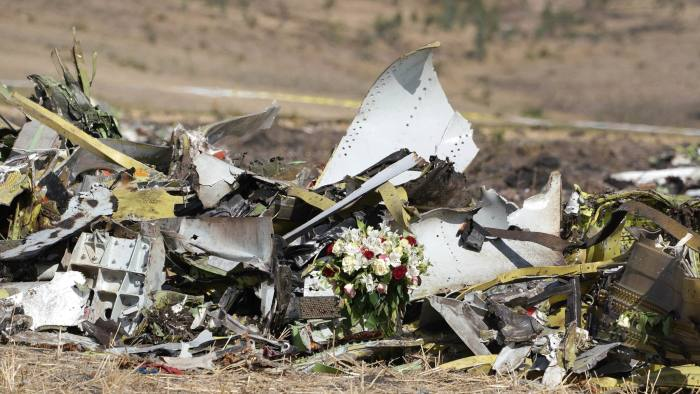
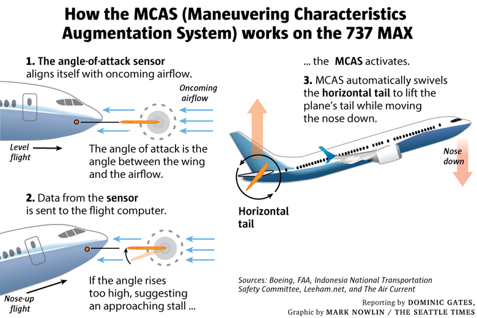

Transport
Boeing 737 MAX 8
These are two of the most terrible events of the modern era. In October 2018 a Boeing 737 MAX 8 crashed and it killed 189 people. In March 2019 the same model of airplane crashed and killed 157 people, for a total of 346 death.
The authorities decided to withdraw the product from the market and begin to do some investigations about it: the hypothesis was that there were some defects in the aircraft flight control system.
The MCAS system (Maneuvering Characteristics Augmentation System) avoid that an airplane stalls, in fact it detect when there is a wrong inclination (when the back of the plane is too low) and uses the stabiliser on the tail section to move down the front of the plane. Authorities though that in the crashed airplanes there was an error in the software, maybe a faulty sensor, that caused the sudden activation of the MCAS when it was no necessary. This fact created a situation where pilots were fighting against the plane to pull up its nose, but in vain.

This tragedy is also caused by people that tested and created the airplanes: a bad communication led engineers to don't really know how the system was made, and several journals affirmed that for an airplane company this is shameful. After this disaster, the company decided to applied provisional updates on the MCAS and organised a specific course for the staff to improve the general security.
The Boeing company moreover decided to create a found for the victim families, where each one receives 150'000 dollars, but this fact is seen only as a publicity stunt by the lawyers, because the amount of money was too little compared to the one that families wanted.